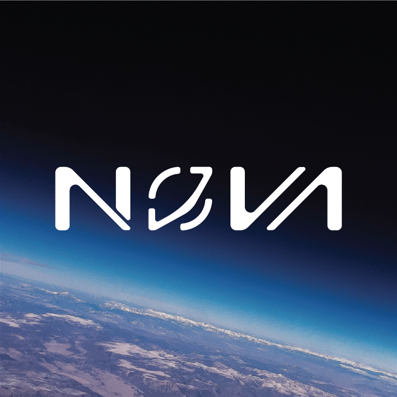
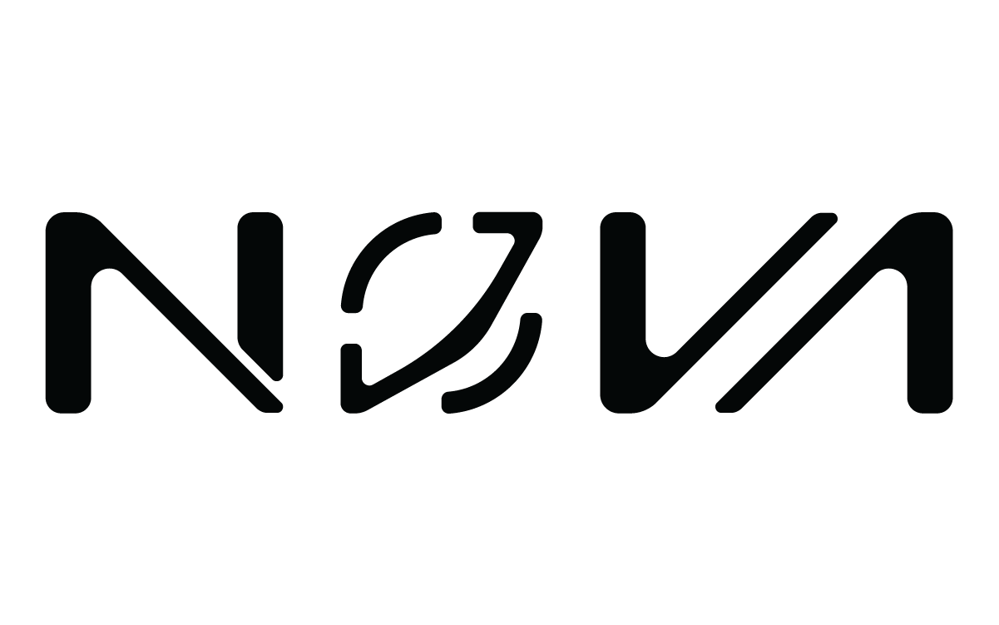
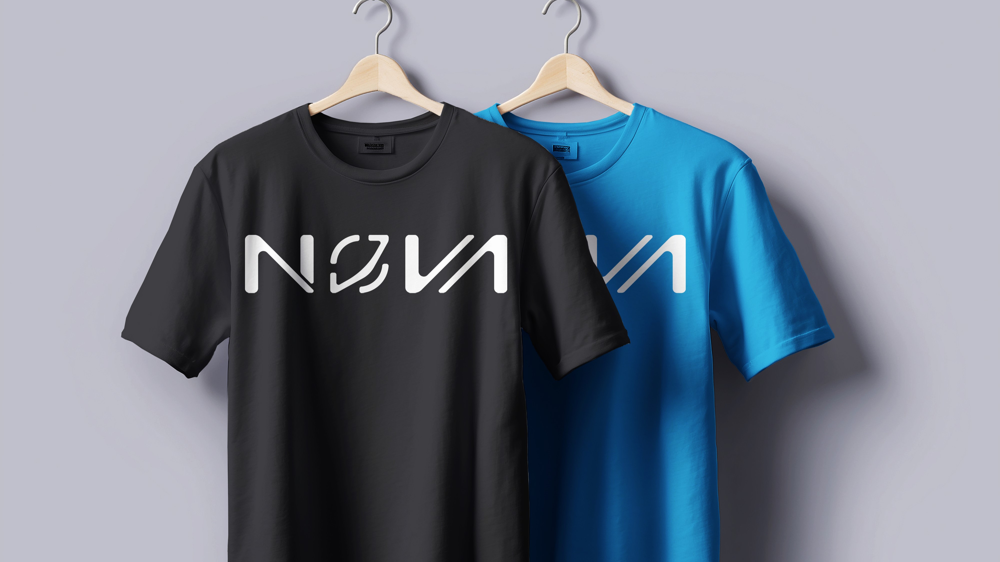
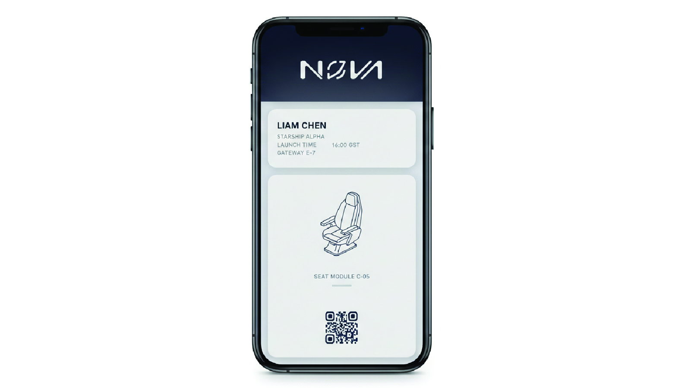
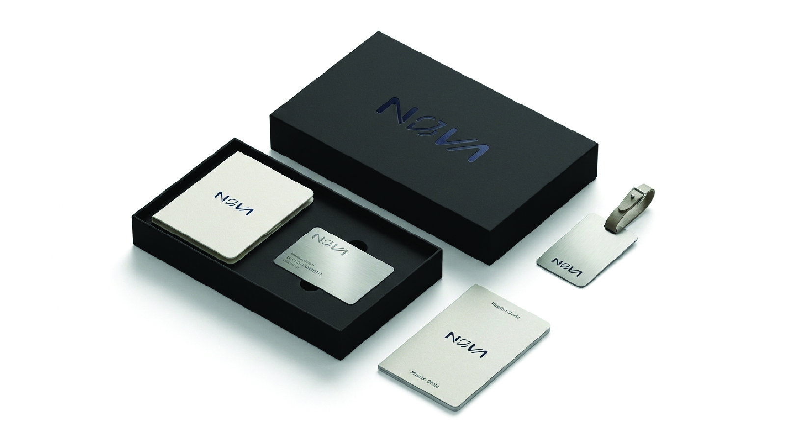

Nova
Futuristic Identity for a Space Tourism Brand
Details
- Client
- Nova (Concept Project)
- Industry
- Space Tourism / Aerospace
- Year
- 2024
Scope
- Services
-
- Brand Identity
- Logo Concept
- Visual System
- Key Values
-
- Innovation
- Exploration
- Future-Forward
The Brief
Nova was explored as a conceptual space tourism brand aimed at making space travel feel inspiring, futuristic, and accessible. The objective was to design a modern identity that captures exploration, innovation, and the sense of awe associated with venturing beyond Earth.
Concept & Thinking
The logo is designed as a custom wordmark with fluid, futuristic letterforms inspired by orbital motion and cosmic trajectories. Rounded cuts and segmented forms introduce a sense of movement, reflecting the idea of travel, rotation, and continuous exploration. The design avoids literal space imagery, focusing instead on abstraction to achieve a timeless and modern aesthetic.
- Custom Wordmark: Fluid, smooth aerodynamic forms.
- Orbital Motion: Segmented construction inspired by paths and rotation.
- Minimal Approach: Maintains clarity and recognizability.
- Scalable Design: Suited for digital and physical applications.
Logo Symbolism
The segmented “O” acts as the central visual element, symbolizing an orbit, a celestial body, and the concept of movement through space. The flowing cuts across the wordmark reinforce themes of innovation, trajectory, and forward momentum, aligning with Nova’s vision of space exploration and future travel.
Typography
The Nova wordmark is custom-designed, featuring smooth, rounded letterforms with precise cuts that echo orbital motion and aerospace engineering. The typography balances softness and structure, creating a futuristic yet approachable tone.
Each character is crafted to feel cohesive while allowing subtle individuality, reinforcing the brand’s focus on innovation and exploration.
Color Palette
The color system for Nova is intentionally minimal, drawing inspiration from the vastness and depth of space. A dark, near-black primary tone establishes a sense of mystery and sophistication, while subtle cool highlights reference starlight and cosmic environments.
Deep Space
#050505
Starlight
#FFFFFF
Palette Logic:
This restrained palette ensures the logo feels premium, futuristic, and adaptable. It emphasizes depth and scale while maintaining high contrast for digital-first applications.
Logo Variations

Real-World Applications

Apparel
Crew uniforms & gear

Digital Boarding
Mobile booking experience

Exterior
Spacecraft livery design

Merchandise
Passenger welcome kit
Final Outcome
The final logo presents Nova as a bold, forward-looking space tourism brand. Its minimal yet futuristic construction ensures strong visual impact while remaining adaptable across digital platforms, interfaces, and branding materials. The mark communicates innovation and exploration without relying on conventional space clichés.